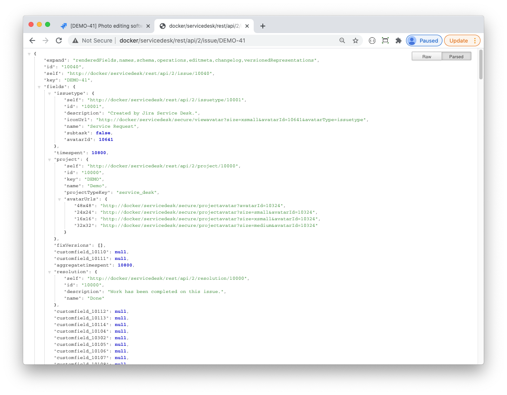

Using Substitution Variables
It is sometimes handy to limit a Confluence custom field's values depending on the values of other fields in your JIRA issue. For example you could have a Confluence field named Products and a single-select custom field named Product Category. In this case you would want your Confluence field to list only products that match the product category selected. To get this to work you would need a way to inject your Product Category value into your Confluence fields' CQL filter. This is what substitution variables are used for. If your Product Category custom field's id is customfield_10000 then your CQL filter could be:
label="${customfield_10000.value}"You set your Confluence field's filter using configuration dialog as described in Confluence Field Configuration. However you will not be able to test the field as referenced variables' values are not available in the configuration dialog. As a workaround you could temporary replace the variables with constant values, test your Confluence field, then revert when you are done.
 In addition to JIRA custom field values you can use other issue properties as substitution variables. The most notable are:
In addition to JIRA custom field values you can use other issue properties as substitution variables. The most notable are:
|
Property |
Description |
|
${id} |
JIRA issue id |
|
${key} |
JIRA issue key |
|
${project.key} |
JIRA project key |
|
${project.name} |
JIRA project name |
|
${project.projectTypeKey} |
JIRA project type |
|
${project.projectCategory.name} |
JIRA project category |
In fact, you can use every property returned by JIRA's API issue call:
rest/api/2/issue/{ISSUE_KEY} Let's move on with our Product Category - Product example: suppose a user had selected a product category and a matching product, and then changes the product category to something different. What happens to the Product field? Well, this depends on your Confluence Field configuration. If an Autofilter option is not set then nothing would happen to the field until you edit your products. If, on the other hand, the autofilter option is set, then your Product field's value will be tested using the new product category. Any product that does not match the newly selected product category will be removed from the Product field's value. This helps to keep your JIRA issue fields' values consistent.